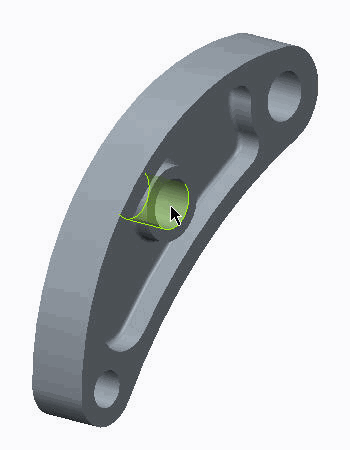
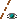
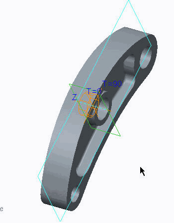
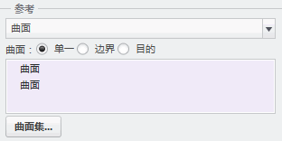
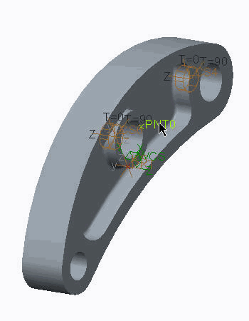
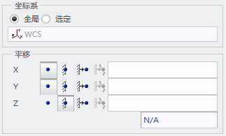

过程: 定义约束
“关闭窗口”(Close Window)
 “拭除未显示的”(Erase Not Displayed)
“拭除未显示的”(Erase Not Displayed) 
 Simulate_Modeling\Constraints
Simulate_Modeling\Constraints
 TILT_LEVER_SIMULATE.PRT
TILT_LEVER_SIMULATE.PRT
|
|
||
 |
Creo Parametric 用户打开 TILT_LEVER.PRT | |
|
|
||
-
任务 1. 调查模型属性。
1. 要查看模型设置，请单击“文件”(File) > “准备”(Prepare) > “模型属性”(Model Properties)。将出现“模型属性”(Model Properties) 对话框。
2. 查看模型中使用的单位，然后单击“关闭”(Close)。
3. 在功能区中，选择“检查”(Inspect) 选项卡。
4. 从“测量”(Measure) 组中单击“直径”(Diameter) 。将出现“直径”(Diameter) 对话框。
5. 选择如图中所示孔的任何一半。在“直径”(Diameter) 对话框中报告直径值。对其余孔重复上述步骤。
6. 关闭“直径”(Diameter) 对话框。
7. 在模型树中，展开“材料”(Materials)。
8. 右键单击 AL2014，然后选择“编辑定义”(Edit Definition)。将出现“材料定义”(Material Definition) 对话框。
9. 查看杨氏模量值、泊松比值和指定的单位。单击“确定”(OK)。
-
任务 2. 定义柱坐标系。
1. 在功能区中，选择“精细模型”(Refine Model) 选项卡。
2. 在“基准”(Datum) 组中单击“坐标系”(Coordinate System) 。将出现“坐标系”(Coordinate System) 对话框。
3. 在“类型”(Type) 下拉列表中选择“柱坐标”(Cylindrical)。
4. 在“参考”(References) 部分中，单击“选择项”(Select items)。
5. 启用“平面显示”(Plane Display) 和“轴显示”(Axis Display) 。按住 CTRL 键并在模型上选择轴 Hole_B 和基准平面 Front。
6. 在“坐标系”(Coordinate System) 对话框中，选择“定向”(Orientation) 选项卡。
7. 在第一个“使用”(Use) 字段中单击。在模型中选择轴 Hole_B。
8. 从“确定”(To Determine) 下拉列表中选择 Z。
9. 在第二个“使用”(Use) 字段中单击。在模型中选择基准平面 Right。
10. 从“投影”(Project) 下拉列表中选择 T=90。坐标系已显示，如图所示。
11. 在“坐标系”(Coordinate System) 对话框中，单击“确定”(OK)。
12. 使用相同方法为孔 C 定义第二个坐标系。使用以下参考：
- 轴 Hole_C
- 基准平面 Front
- 方向“右侧”(Right) 的基准平面。
-
任务 3. 定义约束。
此处定义的约束类型模拟放置在孔中的钢焊条。这使杠杆绕孔轴旋转和沿孔轴平移，但不允许径向变形。
1. 在功能区中，选择“主页”(Home) 选项卡。
2. 在“约束”(Constraints) 组中单击“位移”(Displacement)
 。将出现“约束”(Constraint) 对话框。
。将出现“约束”(Constraint) 对话框。
3. 在模型中，选择孔 B 的任何一半曲面。孔的另一半曲面自动选定，然后两个曲面在“参考”(References) 部分中列出，如图所示。
4. 在“坐标系”(Coordinate System) 部分中，选择“选定”(Selected)。
默认情况下，Creo Simulate 使用 WCS (全局坐标系)定义约束，此坐标系为笛卡尔坐标系。注意平移自由度当前显示 X、Y 和 Z 作为约束的方向。
5. 在模型树中，展开“模拟特征”(Simulation Features) 并选择 Hole_B 柱坐标系 CS1。
注意“平移”(Translation) 部分显示 R、Theta 和 Z。
6. 为 Theta 和 Z 单击“自由平移”(Free Translation)
 。
。
7. 单击“确定”(OK)。
8. 对 Hole C 应用相同的约束条件，使用为 Hole C 创建的柱坐标系 CS2。
9. 在功能区中，选择“主页”(Home) 选项卡。
10. 在“约束”(Constraints) 组中单击“位移”(Displacement)
。将出现“约束”(Constraint) 对话框。
11. 启用“点显示”(Point Display)
 。在“参考”(References) 部分中，从下拉列表中选择“点”(Points)。
。在“参考”(References) 部分中，从下拉列表中选择“点”(Points)。
12. 选择基准点 PNT0，如图所示。
13. 使用 WCS 并完成“平移”(Translation) 部分，如图所示。
14. 单击“确定”(OK)。
所有这些约束都是相同约束集的一部分，因此，同时作用在系统上。

过程就此结束。